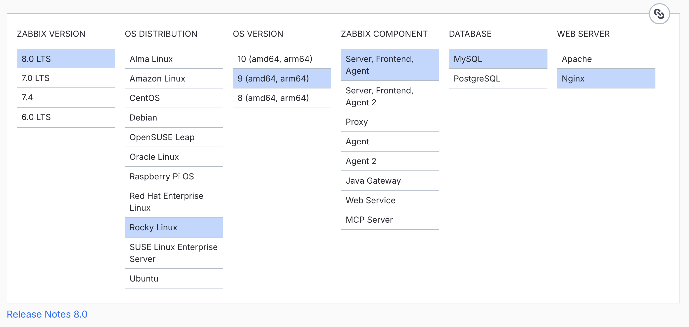

Préparer le système pour Zabbix
Avant d'installer un composant Zabbix, nous devons vérifier que le ou les serveurs respectent les exigences de configuration décrites dans la section précédente : Prérequis système.
Si vous prévoyez d'installer la base de données, le serveur et/ou le frontend Zabbix sur des machines distinctes, préparez chaque serveur séparément en suivant les instructions ci-dessous. Les serveurs qui hébergeront un proxy Zabbix doivent être préparés de la même manière.
Désactiver SELinux sur RHEL
Sur un système basé sur Red Hat utilisé dans un environnement de test ou de laboratoire, vous pouvez désactiver SELinux (temporairement) afin qu'il n'interfère pas avec l'installation et la configuration initiale de Zabbix.
Ne désactivez pas SELinux sur les systèmes de production. Pour un déploiement en production, SELinux doit rester activé et en mode enforcing. Consultez la section consacrée à SELinux dans le chapitre sur la configuration avancée et la sécurité pour savoir comment configurer les politiques requises pour Zabbix.
Pour vérifier l'état actuel de SELinux, utilisez la commande sestatus.
État de SELinux
~# sestatus
SELinux status: enabled
SELinuxfs mount: /sys/fs/selinux
SELinux root directory: /etc/selinux
Loaded policy name: targeted
Current mode: enforcing
Mode from config file: enforcing
Policy MLS status: enabled
Policy deny_unknown status: allowed
Memory protection checking: actual (secure)
Max kernel policy version: 33
Comme indiqué, le système est actuellement en mode enforcing. Pour faire passer
temporairement SELinux en mode permissive, exécutez setenforce 0.
Désactiver temporairement l'application de SELinux
~# setenforce 0
~# sestatus
SELinux status: enabled
SELinuxfs mount: /sys/fs/selinux
SELinux root directory: /etc/selinux
Loaded policy name: targeted
Current mode: permissive
Mode from config file: enforcing
Policy MLS status: enabled
Policy deny_unknown status: allowed
Memory protection checking: actual (secure)
Max kernel policy version: 33
Le mode est maintenant permissive. Cette modification ne persiste toutefois pas
après un redémarrage. Pour la rendre permanente, modifiez le fichier de
configuration /etc/selinux/config et remplacez enforcing par permissive.
Vous pouvez également obtenir le même résultat plus facilement avec la commande suivante :
Configurer SELinux en mode permissive de façon permanente
Red Hat
Cette commande modifie le fichier de configuration. Une nouvelle exécution de
sestatus indique alors que le mode courant et celui du fichier de configuration
sont tous deux permissive.
Vérifier à nouveau l'état de SELinux
~# sestatus
SELinux status: enabled
SELinuxfs mount: /sys/fs/selinux
SELinux root directory: /etc/selinux
Loaded policy name: targeted
Current mode: permissive
Mode from config file: permissive
Policy MLS status: enabled
Policy deny_unknown status: allowed
Memory protection checking: actual (secure)
Max kernel policy version: 33
Installer le dépôt Zabbix
Sur la page de téléchargement de Zabbix https://www.zabbix.com/download, sélectionnez la version de Zabbix que vous souhaitez installer. Dans notre cas, nous utiliserons Zabbix 8.0 LTS. Veillez également à choisir la distribution correcte : Rocky Linux 9, openSUSE Leap 16 ou Ubuntu 24.04 dans nos exemples.
Nous installerons le serveur Zabbix avec NGINX comme serveur web du frontend. Téléchargez les paquets correspondant à la configuration choisie.

0.1 Téléchargement de Zabbix
Remarques spécifiques à Red Hat
Si vous utilisez un système basé sur RHEL, comme Rocky Linux, commencez par
exclure les paquets Zabbix fournis par le dépôt EPEL lorsque celui-ci est installé.
Modifiez /etc/yum.repos.d/epel.repo et ajoutez la directive suivante afin
d'exclure ces paquets par défaut :
Tip
Il est déconseillé de laisser le dépôt EPEL activé en permanence, car cela
peut provoquer des conflits en remplaçant involontairement des paquets ou en
installant des paquets indésirables. Il est plus sûr de ne l'activer qu'en
cas de besoin avec la commande suivante :
dnf install --enablerepo=epel <package-name>.
Ainsi, EPEL n'est activé que lorsqu'il est explicitement requis.
Remarques spécifiques à openSUSE
Sur openSUSE, des paquets Zabbix sont également disponibles dans le dépôt
repo-oss par défaut. Contrairement aux systèmes basés sur RHEL, openSUSE ne
propose pas de mécanisme intégré pour exclure certains paquets d'un dépôt donné.
Les paquets Zabbix des dépôts par défaut ont toutefois généralement une ou deux
versions LTS de retard. Ils ne devraient donc pas perturber l'installation, sauf
s'ils sont déjà installés.
À l'étape suivante, nous configurerons les dépôts officiels Zabbix. Si vous
choisissez une version de dépôt Zabbix plus récente que les paquets disponibles
dans repo-oss, zypper installera automatiquement la version la plus récente.
Tip
Si vous avez déjà installé des paquets Zabbix depuis les dépôts par défaut, il est recommandé :
- soit de les supprimer avant de poursuivre ;
- soit de les mettre à niveau après l'ajout des nouveaux dépôts Zabbix avec
l'option zypper
--allow-vendor-change.
SUSE Linux Enterprise Server (SLES)
Sur SLES, les paquets Zabbix ne sont pas inclus dans les dépôts par défaut. Vous pouvez donc ajouter le dépôt officiel Zabbix sans risque de conflit avec des paquets existants.
Ajouter le dépôt Zabbix
Nous allons maintenant installer le dépôt Zabbix sur notre système d'exploitation. Après son ajout, il est recommandé de nettoyer le cache des dépôts afin de supprimer les anciens fichiers et de mettre les métadonnées à jour :
Ajouter le dépôt Zabbix
Red Hat
rpm -Uvh https://repo.zabbix.com/zabbix/8.0/release/rocky/9/noarch/zabbix-release-latest-8.0.el9.noarch.rpm
dnf clean all
SUSE
rpm -Uvh --nosignature https://repo.zabbix.com/zabbix/8.0/release/sles/16/noarch/zabbix-release-latest-8.0.sles16.noarch.rpm
zypper --gpg-auto-import-keys refresh 'Zabbix Official Repository'
# Set the repository to auto-refresh to ensure it's always up to date
zypper modifyrepo --refresh 'Zabbix Official Repository'
Ubuntu
Ces commandes actualisent les métadonnées des dépôts et préparent le système à l'installation de Zabbix.
Qu'est-ce qu'un dépôt ?
Sous Linux, un dépôt est une configuration qui permet d'accéder à des paquets logiciels et de les installer. Il peut être comparé à un magasin d'applications où les logiciels proviennent d'une source de confiance, ici le dépôt Zabbix. De nombreux dépôts sont disponibles, mais il est important de n'ajouter que ceux auxquels vous faites confiance. La pratique la plus sûre consiste à utiliser les dépôts fournis par votre système d'exploitation et à n'en ajouter d'autres que lorsque vous êtes certain qu'ils sont fiables et nécessaires.
Pour notre installation, le dépôt Zabbix est fourni par l'éditeur lui-même et constitue donc une source fiable. EPEL (Extra Packages for Enterprise Linux) est un autre dépôt populaire et sûr pour les systèmes basés sur Red Hat ; il est fréquemment utilisé dans les environnements d'entreprise. Restez néanmoins prudent lorsque vous ajoutez un dépôt afin de préserver la sécurité et la stabilité du système.
Préparer le système à exécuter des conteneurs avec Podman
Si vous souhaitez exécuter des composants Zabbix dans des conteneurs avec Podman, vérifiez que Podman est installé et correctement configuré. Les instructions suivantes expliquent son installation sur différents systèmes d'exploitation.
Vous pouvez ignorer cette section si aucun composant Zabbix ne sera exécuté dans un conteneur sur le système actuel.
Pourquoi Podman ?
Podman est un outil de conteneurisation populaire qui permet d'exécuter et de gérer des conteneurs sans nécessiter de daemon comme Docker. Il s'agit du moteur de conteneurs recommandé sur la plupart des distributions modernes et il offre plusieurs avantages par rapport à Docker.
Premièrement, Podman améliore la sécurité grâce aux conteneurs rootless, qui s'exécutent sous des comptes utilisateur non privilégiés. Deuxièmement, il s'intègre étroitement à SELinux, ce qui permet un contrôle d'accès robuste et l'application des politiques. Troisièmement, Podman fonctionne nativement avec systemd, facilitant la gestion du cycle de vie des conteneurs à l'aide d'unités systemd et de Quadlets.
Installer Podman
Pour exécuter des conteneurs avec Podman, installez d'abord Podman ainsi que les outils supplémentaires nécessaires à leur gestion avec systemd.
Installer Podman et les outils nécessaires
Red Hat
SUSE
Ubuntu
Configurer Podman pour une gestion des conteneurs par utilisateur
Créez ensuite un utilisateur podman qui exécutera le ou les conteneurs. Vous
pouvez choisir un autre nom, par exemple zabbix-proxy pour un utilisateur qui
n'exécutera qu'un proxy Zabbix dans un conteneur.
Créer et initialiser l'utilisateur Podman
Si SELinux est activé sur le système, exécutez la commande suivante en tant que
root.
SELinux : définir la correspondance des contextes de fichiers
Cette commande ajoute une correspondance de contexte de fichiers SELinux en
créant une équivalence (-e) entre le répertoire de stockage par défaut des
conteneurs, /var/lib/containers, et le stockage Podman de l'utilisateur,
/home/podman/.local/share/containers. SELinux traite ainsi les fichiers du
stockage utilisateur comme ceux du stockage système par défaut et applique les
autorisations prévues par sa politique.
SELinux : appliquer la correspondance des contextes de fichiers
Après la définition des nouveaux contextes SELinux, cette commande applique
récursivement (-R) les contextes de sécurité corrects aux fichiers du répertoire.
L'option -v active le mode verbeux et affiche les modifications. Tous les
fichiers du stockage des conteneurs reçoivent ainsi les étiquettes SELinux
définies par la commande semanage précédente.
Cette commande active le « lingering » pour l'utilisateur podman. Les services
de cet utilisateur, notamment les conteneurs gérés par systemd, peuvent alors
continuer à fonctionner sans session utilisateur active. Les proxies conteneurisés
et les autres services restent ainsi actifs après une déconnexion ou un
redémarrage du système.
Pour terminer la configuration de Podman, indiquez à systemd où se trouvent les fichiers d'exécution propres à l'utilisateur :
Définir XDG_RUNTIME_DIR pour l'utilisateur Podman
Cette ligne définit correctement la variable d'environnement XDG_RUNTIME_DIR
pour l'utilisateur podman et la charge dans la session actuelle et les sessions
suivantes. Cette variable désigne l'emplacement des fichiers d'exécution propres
à l'utilisateur, notamment le bus de session systemd. Elle est indispensable au
bon fonctionnement de systemctl --user avec les conteneurs gérés par Podman.
Le système est maintenant prêt à exécuter des composants Zabbix dans des conteneurs avec Podman.
Problème connu lors de l'attente de network-online.target
Si le démarrage des conteneurs dure environ 90 secondes avant d'échouer et
que le journal système (journalctl) contient des lignes similaires à celles
ci-dessous :
systemd[1601]: Starting Wait for system level network-online.target as user....
sh[3128]: inactive
sh[3130]: inactive
sh[3132]: inactive
sh[3134]: inactive
sh[3136]: inactive
...
...
sh[3604]: inactive
sh[3606]: inactive
systemd[1601]: podman-user-wait-network-online.service: start operation timed out. Terminating.
systemd[1601]: podman-user-wait-network-online.service: Main process exited, code=killed, status=15/TERM
systemd[1601]: podman-user-wait-network-online.service: Failed with result 'timeout'.
systemd[1601]: Failed to start Wait for system level network-online.target as user..
vous rencontrez un problème connu avec Quadlet : https://github.com/containers/podman/issues/24796.
Le service Quadlet généré par systemd contient une dépendance envers la cible
système spéciale network-online.target, qui indique normalement que le
réseau est entièrement opérationnel. Sur certaines distributions Linux ou
avec certaines configurations réseau, les composants réseau peuvent ne pas
signaler correctement à systemd que le réseau est « online ». La cible
network-online.target n'est alors jamais activée et Podman attend jusqu'à
l'expiration du délai, car il considère que le réseau n'est pas disponible.
Comme solution de contournement, créez un service système factice qui
déclenchera network-online.target :
Conclusion
La préparation du système pour Zabbix est maintenant terminée. L'environnement est configuré pour l'installation des composants Zabbix. Nous avons ajouté le dépôt officiel Zabbix et préparé le système à installer le serveur Zabbix, la base de données et le frontend. Si nécessaire, nous avons également préparé le système à exécuter des conteneurs avec Podman.
Le système est prêt pour les étapes suivantes. Dans le prochain chapitre, nous aborderons l'installation des composants Zabbix et configurerons le serveur Zabbix, la base de données et le frontend.
Questions
-
Pourquoi est-il important d'utiliser le dépôt officiel Zabbix plutôt que les paquets fournis par votre distribution Linux ?
-
Pourquoi SELinux doit-il rester activé dans les environnements de production et quelles sont les conséquences d'un passage en mode permissive ?